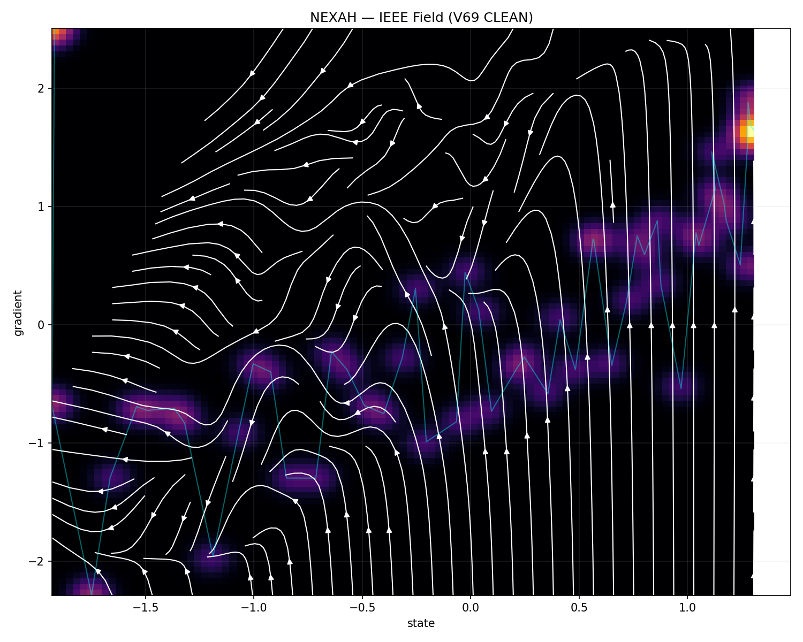
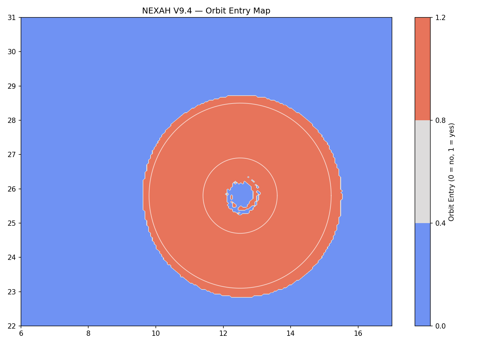
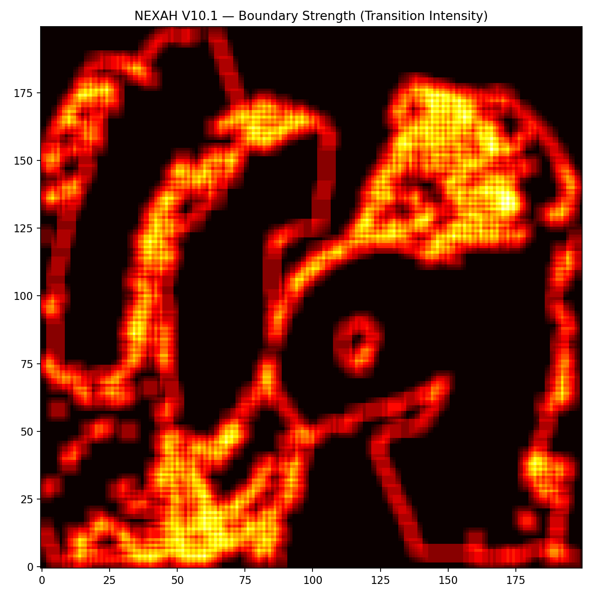
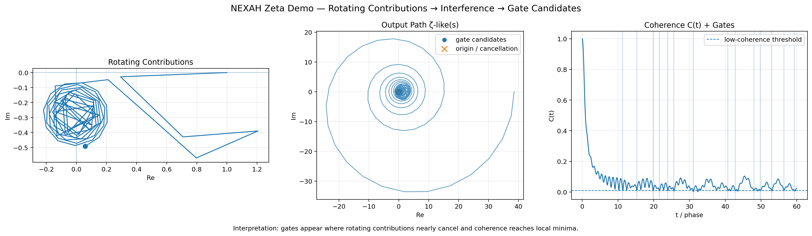

SAMPLE
Discrete state and gradient records. Carrier, support and resolution remain visible.
NEXAH CORE · COMPLETE SOURCE-BOUND PACKAGE
It is a declared sequence of carriers: sample, reconstruction, boundary, navigation, stability, transport, regime and return.




THE PACKAGE SPINE
Discrete state and gradient records. Carrier, support and resolution remain visible.
Point cloud, sheet, mesh and field. Interpolation is never silently promoted to mechanism.
Class edges, splinters, ridges and residual mismatch remain separate comparison objects.
Cost, direction, control and target bias are declared constructed fields.
Lyapunov, delay, injection and decision-gate checks preserve null and negative results.
Orbit entry, channel direction and multi-regime paths extend the chronology through V9.
V10 returns categorical regimes to continuous boundary intensity and transition signal.
Every image returns to an asset, producer and hash. Motifs stay owner mnemonics.
The exact source-to-flow walk, including resolution checks and the open Lantern-on-Pole contract.
INSTRUMENT 02Atlas, Guided Tour, Compare seam, Motif Lens, Visual Wall, search and complete receipt.
INSTRUMENT 03SHA-256 for every displayed source image and every producing script or retained source visual.
CLAIM CEILING
PACKAGE COMPLETE · VERIFY EXISTING · STOP